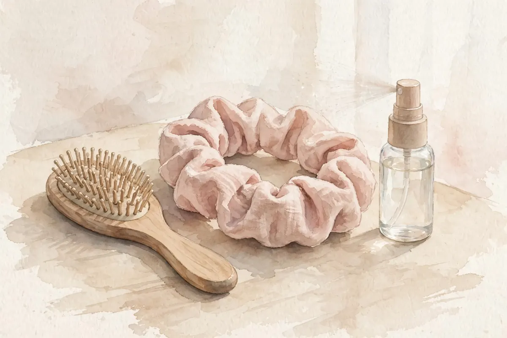
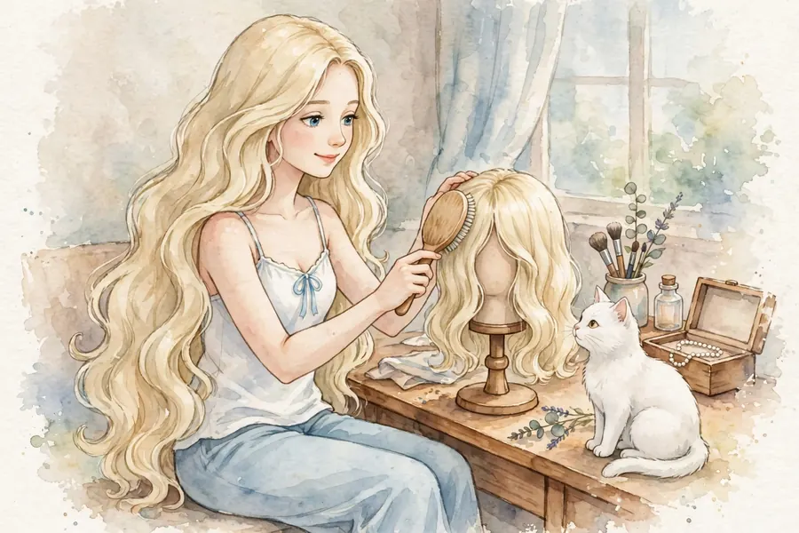

トップ ＞ ヘアケア ＞ ウィッグ・つけ毛の手入れ：表示の読み方と保管の工夫
ウィッグ・つけ毛の手入れ：表示の読み方と保管の工夫

ウィッグやつけ毛は、髪型を変えたり、ボリュームを足したりするときに使うアイテムです。施術のお客様との会話で、「ウィッグって、洗っていいんですか」と聞かれることがあります。店頭に並ぶウィッグには、手入れの方法が表示に書かれていますが、素材によって案内がまったく違います。この記事では、特定の商品の話ではなく、ウィッグ・つけ毛の手入れ表示の読み方を整理します。私自身、新しいアイテムを手に取るときは、まずこの表示を確認するようにしています。
まず確認する表示は3つ
ひとつ目は、洗えるかどうかの表示です。「水洗いできます」「洗えません」といった案内があり、洗えるものは、洗い方の手順もあわせて書かれていることがあります。洗えないものは、ブラッシングや専用のスプレーでの手入れが案内されていることが多い形です。洗えるかどうかは、素材によって決まるため、買う前にこの欄を読むのが私のやり方です。
ふたつ目は、使えるケア用品の表示です。「専用シャンプーを使う」「専用のスプレーを使う」といった案内があり、ふだんのシャンプーとは別のものを使う前提のものもあります。みっつ目は、耐熱温度の表示です。「耐熱180℃まで」といった数字が書かれているものは、その温度までのヘアアイロンやドライヤーが使える目安になります。耐熱性の表示がないものは、熱を当てる使い方は案内されていません。
洗い方の表示と手順の考え方
洗えるタイプの表示には、「ぬるま湯で洗う」「専用シャンプーを溶かして洗う」「軽くすすぐ」といった手順が書かれていることがあります。洗うときは、毛の流れに沿って、やさしく扱うのが基本です。強くこすったり、絞ったりすると、形が崩れる原因になります。洗ったあとは、タオルで軽く水気を取ってから、風通しのよい場所で自然乾燥させる案内が書かれていることが多い形です。
乾かし方も、表示の確認ポイントです。「ドライヤーの使用は避ける」「陰干しする」といった案内があるものは、その通りにするのが基本です。乾かすときは、ウィッグスタンドや、形を保てる台にのせて乾かすと、形が崩れにくくなります。濡れたまま置いておくと、においや形崩れの原因になることがあるため、洗った日は乾かすまでをセットで考えるのが無難です。
形を保つ保管の工夫
使わないときの保管も、表示に書かれていることがあります。「直射日光を避けて保管する」「湿気の少ない場所に置く」といった案内が一般的です。ウィッグスタンドにのせておく方法もあれば、専用のケースや袋に入れて保管する方法もあります。どちらも、形を保つことが目的です。折りたたんでしまうと、折り目がついて形が崩れることがあります。
ブラッシングも、手入れのひとつです。毛の流れに沿って、毛先から少しずつとかすのが基本で、専用のブラシや、目の粗いくしを使う案内が書かれていることがあります。つけ毛も同じで、付け外しのたびに軽くとかして、形を整えてから保管すると、次に使うときに扱いやすくなります。
ウィッグの色や形を選ぶときも、表示の確認は役立ちます。色の名前や、長さの表示は、商品ごとに基準が違うことがあります。初めて使う場合は、普段の髪型に近い色と長さから試すのが無難です。つけ毛も、付ける位置と本数の案内が書かれていることがあります。
迷ったときの基本
手入れの方法に迷ったら、まずはパッケージの表示通りにするのが基本です。表示は、その商品の素材や作りを前提に決められています。表示に書かれていない使い方は、素材を傷める原因になることがあります。使い方が分からないときは、販売店やメーカーの相談窓口に問い合わせる方法もあります。この記事は表示の読み方の案内であり、商品ごとに表示がある場合は、そちらが優先です。

セラフィナ「ウィッグも、表示を読んで手入れすれば長く使えるよ。形を保つのが、いちばんのコツだね」

セラフィナ｜美容の道具箱の案内役
「量と表示が分かれば、美容は失敗しない。」——セラフィナと白猫のモコが、買う前のチェックポイントを案内します。綺麗になりたい気持ちに正直に、でも表示は冷静に読むのが、このサイトの約束です。